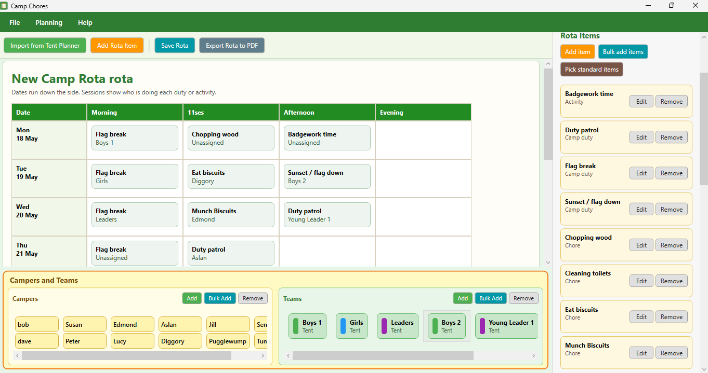

Rota planning preview
A glimpse of the current camp duty planning interface.
A rota planning tool for camp chores, patrol duties, free time, and all the jobs that keep a camp moving.
Camp Chores is built for planning camp chore rotas, especially for Scout camps. It makes duty planning easier to understand than a sprawling rota spreadsheet.
Add people, groups, rota items, and sessions, then build a clear schedule for the work that needs doing across camp.
A preview of the current camp duty planning interface.

A glimpse of the current camp duty planning interface.
This is hobby software, not a corporate product with a support contract. It is shared because it solves a real camp admin problem and is useful in practice.
The Microsoft Store is the official download source. The privacy policy covers the Bear Camp camp tools.
Bear Camp tools are offered on trust. There is no paywall, no lock, and no awkward begging bowl. Just a simple honesty-box request: if these camp tools help your group, please consider buying me a coffee for £1.
The Scout laws that feel especially relevant here are:
These apps are built in my own time to help leaders spend less time wrestling with admin and more time planning proper camps, supporting young people, and doing all the unpaid behind-the-scenes jobs that appear just before departure.
If the app saves your group an evening of rota admin, drop a pound in the camp mug.
Camp Chores is available from the Microsoft Store. Treat the Store listing as the official download source.